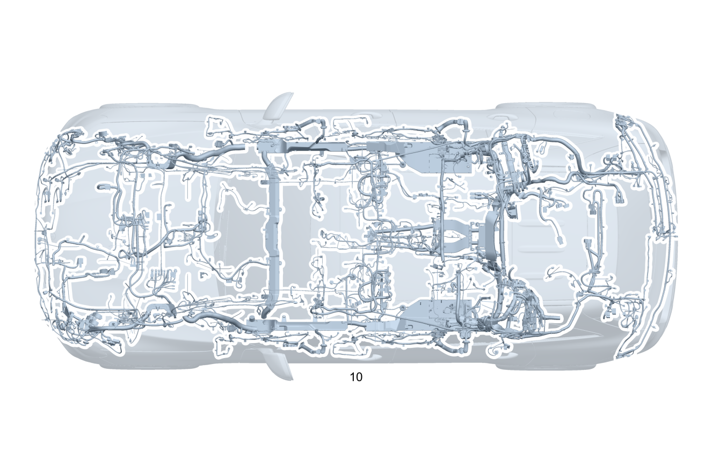

| № | Артикул | Название | Кол. | Примечание | Ограничение |
|---|---|---|---|---|---|
| 10 | A 253 540 43 16 | Электрический жгут (ELECTRICAL WIRING HARNESS) | 1 | Основной жгут электропроводки системы рамы и пола [001660] В ЖГУТЕ ЭЛЕКТРОПРОВОДКИ ИМЕЮТСЯ СООТВЕТСТВ. СПЕЦ.ИСПОЛНЕНИЯ СОГЛАСНО ЗАВОДСКОМУ НОМЕРУ АВТОМОБИЛЯ [622] ПРИ ЗАКАЗЕ УКАЗАТЬ ИДЕНТ.№ | 700 |
| 20 | Q 000000000002 | - Возможен заказ только отдельных компонентов жгута проводов | 1 | ESP® Рулевое управление: Влево | |
| 20 | Q 000000000002 | - Возможен заказ только отдельных компонентов жгута проводов | 1 | ESP® Рулевое управление: Влево | 800 |
| 20 | Q 000000000002 | - Возможен заказ только отдельных компонентов жгута проводов | 1 | ESP® Рулевое управление: Влево | |
| 20 | Q 000000000002 | - Возможен заказ только отдельных компонентов жгута проводов | 1 | Натяжитель ремня безопасности Рулевое управление: Влево | 809+299 |
| 20 | Q 000000000002 | - Возможен заказ только отдельных компонентов жгута проводов | 1 | Натяжитель ремня безопасности Рулевое управление: Влево | 299 |
| 20 | Q 000000000002 | - Возможен заказ только отдельных компонентов жгута проводов | 1 | Защита пешеходов Рулевое управление: Влево | U60 |
| 20 | Q 000000000002 | - Возможен заказ только отдельных компонентов жгута проводов | 1 | Распашная дверь багажного отделения с автоматическим приводом | 890 |
| 20 | Q 000000000002 | - Возможен заказ только отдельных компонентов жгута проводов | 1 | Распашная дверь багажного отделения с автоматическим приводом | 800+890 |
| 20 | Q 000000000002 | - Возможен заказ только отдельных компонентов жгута проводов | 1 | Распашная дверь багажного отделения с автоматическим приводом | 890 |
| 20 | Q 000000000002 | - Возможен заказ только отдельных компонентов жгута проводов | 1 | Система центральной блокировки замков Рулевое управление: Влево | |
| 20 | Q 000000000002 | - Возможен заказ только отдельных компонентов жгута проводов | 1 | Система контроля давления в шинах (RDK) Рулевое управление: Влево | 475 |
| 20 | Q 000000000002 | - Возможен заказ только отдельных компонентов жгута проводов | 1 | Стык моста, слева | |
| 20 | Q 000000000002 | - Возможен заказ только отдельных компонентов жгута проводов | 1 | Стык моста, слева | 459/489/640/641/642 |
| 20 | Q 000000000002 | - Возможен заказ только отдельных компонентов жгута проводов | 1 | Стык моста, слева | 800 |
| 20 | Q 000000000002 | - Возможен заказ только отдельных компонентов жгута проводов | 1 | Стык моста, слева | |
| 20 | Q 000000000002 | - Возможен заказ только отдельных компонентов жгута проводов | 1 | Стык моста, слева | (459/489/640/641/642)+800 |
| 20 | Q 000000000002 | - Возможен заказ только отдельных компонентов жгута проводов | 1 | Стык моста, слева | 459/489/640/641/642 |
| 20 | Q 000000000002 | - Возможен заказ только отдельных компонентов жгута проводов | 1 | Стык моста, слева | 489/640/641/642 |
| 20 | Q 000000000002 | - Возможен заказ только отдельных компонентов жгута проводов | 1 | Стык моста, справа | |
| 20 | Q 000000000002 | - Возможен заказ только отдельных компонентов жгута проводов | 1 | Стык моста, справа | 459/489 |
| 20 | Q 000000000002 | - Возможен заказ только отдельных компонентов жгута проводов | 1 | Стык моста, справа | 800 |
| 20 | Q 000000000002 | - Возможен заказ только отдельных компонентов жгута проводов | 1 | Стык моста, справа | |
| 20 | Q 000000000002 | - Возможен заказ только отдельных компонентов жгута проводов | 1 | Стык моста, справа | (459/489)+800 |
| 20 | Q 000000000002 | - Возможен заказ только отдельных компонентов жгута проводов | 1 | Стык моста, справа | (459/489) |
| 20 | Q 000000000002 | - Возможен заказ только отдельных компонентов жгута проводов | 1 | Стык моста, справа | 489 |
| 20 | Q 000000000002 | - Возможен заказ только отдельных компонентов жгута проводов | 1 | Боковая подушка безопасности впереди справа Рулевое управление: Влево [402] БОЛЬШЕ НЕ ПОСТАВЛЯЕТСЯ | 800+(222/242) |
| 20 | Q 000000000002 | - Возможен заказ только отдельных компонентов жгута проводов | 1 | Боковая подушка безопасности впереди справа Рулевое управление: Влево [402] БОЛЬШЕ НЕ ПОСТАВЛЯЕТСЯ | 222/242 |
| 20 | Q 000000000002 | - Возможен заказ только отдельных компонентов жгута проводов | 1 | Боковая подушка безопасности впереди справа Рулевое управление: Влево | 222/242 |
| 20 | Q 000000000002 | - Возможен заказ только отдельных компонентов жгута проводов | 1 | Система распознавания занятости сиденья Рулевое управление: Влево | 800+(222/242) |
| 20 | Q 000000000002 | - Возможен заказ только отдельных компонентов жгута проводов | 1 | Система распознавания занятости сиденья Рулевое управление: Влево | 222/242 |
| 20 | Q 000000000002 | - Возможен заказ только отдельных компонентов жгута проводов | 1 | Система распознавания занятости сиденья Рулевое управление: Влево | 222/242 |
| 20 | Q 000000000002 | - Возможен заказ только отдельных компонентов жгута проводов | 1 | Светодиодная подсветка салона слева Рулевое управление: Влево | 876+(221/275)+830 |
| 20 | Q 000000000002 | - Возможен заказ только отдельных компонентов жгута проводов | 1 | Светодиодная подсветка салона слева Рулевое управление: Влево | 876+877+(221/275) |
| 20 | Q 000000000002 | - Возможен заказ только отдельных компонентов жгута проводов | 1 | Светодиодная подсветка салона слева Рулевое управление: Влево | 876+877+(221/275)+830 |
| 20 | Q 000000000002 | - Возможен заказ только отдельных компонентов жгута проводов | 1 | Светодиодная подсветка пространства для ног Рулевое управление: Влево | 800+876+877 |
| 20 | Q 000000000002 | - Возможен заказ только отдельных компонентов жгута проводов | 1 | Светодиодная подсветка пространства для ног Рулевое управление: Влево | 876+877 |
| 20 | Q 000000000002 | - Возможен заказ только отдельных компонентов жгута проводов | 1 | Светодиодная подсветка пространства для ног Рулевое управление: Влево | 800+876+877+(221/275) |
| 20 | Q 000000000002 | - Возможен заказ только отдельных компонентов жгута проводов | 1 | Светодиодная подсветка пространства для ног Рулевое управление: Влево | 876+877+(221/275) |
| 20 | Q 000000000002 | - Возможен заказ только отдельных компонентов жгута проводов | 1 | Светодиодная подсветка салона Рулевое управление: Влево | 800+876+877+(221/275)+(222/242) |
| 20 | Q 000000000002 | - Возможен заказ только отдельных компонентов жгута проводов | 1 | Светодиодная подсветка салона Рулевое управление: Влево | 876+877+(221/275)+(222/242) |
| 20 | Q 000000000002 | - Возможен заказ только отдельных компонентов жгута проводов | 1 | Светодиодная подсветка салона Рулевое управление: Влево | 800+876 |
| 20 | Q 000000000002 | - Возможен заказ только отдельных компонентов жгута проводов | 1 | Светодиодная подсветка салона Рулевое управление: Влево | 876 |
| 20 | Q 000000000002 | - Возможен заказ только отдельных компонентов жгута проводов | 1 | Светодиодная подсветка посредине Центральная консоль/вещевой лоток Рулевое управление: Влево | 800+876+877 |
| 20 | Q 000000000002 | - Возможен заказ только отдельных компонентов жгута проводов | 1 | Светодиодная подсветка посредине Центральная консоль/вещевой лоток Рулевое управление: Влево | 876+877 |
| 20 | Q 000000000002 | - Возможен заказ только отдельных компонентов жгута проводов | 1 | Провод электропитания светодиодной подсветки салона Рулевое управление: Влево | 800 |
| 20 | Q 000000000002 | - Возможен заказ только отдельных компонентов жгута проводов | 1 | Провод электропитания светодиодной подсветки салона Рулевое управление: Влево | |
| 20 | Q 000000000002 | - Возможен заказ только отдельных компонентов жгута проводов | 1 | Подлокотник сзади Рулевое управление: Влево | 800+876 |
| 20 | Q 000000000002 | - Возможен заказ только отдельных компонентов жгута проводов | 1 | Подлокотник сзади Рулевое управление: Влево | 876 |
| 20 | Q 000000000002 | - Возможен заказ только отдельных компонентов жгута проводов | 1 | Подлокотник сзади Рулевое управление: Влево | 800+876+877 |
| 20 | Q 000000000002 | - Возможен заказ только отдельных компонентов жгута проводов | 1 | Подлокотник сзади Рулевое управление: Влево | 876+877 |
| 20 | Q 000000000002 | - Возможен заказ только отдельных компонентов жгута проводов | 1 | Светодиодная подсветка салона справа Рулевое управление: Влево | 876+(222/242)+830 |
| 20 | Q 000000000002 | - Возможен заказ только отдельных компонентов жгута проводов | 1 | Светодиодная подсветка салона справа Рулевое управление: Влево | 876+877+(222/242) |
| 20 | Q 000000000002 | - Возможен заказ только отдельных компонентов жгута проводов | 1 | Светодиодная подсветка салона справа Рулевое управление: Влево | 876+877+(222/242)+830 |
| 20 | Q 000000000002 | - Возможен заказ только отдельных компонентов жгута проводов | 1 | Подсветка центральной консоли | 876+877+(421/427) |
| 20 | Q 000000000002 | - Возможен заказ только отдельных компонентов жгута проводов | 1 | Замок ремня безопасности в задней части салона | U01 |
| 20 | Q 000000000002 | - Возможен заказ только отдельных компонентов жгута проводов | 1 | Замок ремня безопасности в задней части салона Рулевое управление: Влево | 800+U01 |
| 20 | Q 000000000002 | - Возможен заказ только отдельных компонентов жгута проводов | 1 | Замок ремня безопасности в задней части салона Рулевое управление: Влево | U01 |
| 20 | Q 000000000002 | - Возможен заказ только отдельных компонентов жгута проводов | 1 | Боковая подушка безопасности (задняя) Рулевое управление: Влево | 809+293 |
| 20 | Q 000000000002 | - Возможен заказ только отдельных компонентов жгута проводов | 1 | Боковая подушка безопасности (задняя) Рулевое управление: Влево | 293 |
| 20 | Q 000000000002 | - Возможен заказ только отдельных компонентов жгута проводов | 1 | Боковая подушка безопасности (задняя) Рулевое управление: Влево | 800+293 |
| 20 | Q 000000000002 | - Возможен заказ только отдельных компонентов жгута проводов | 1 | Боковая подушка безопасности (задняя) Рулевое управление: Влево | 293 |
| 20 | Q 000000000002 | - Возможен заказ только отдельных компонентов жгута проводов | 1 | Шина данных CAN Рулевое управление: Влево | (873/401)+(221/872)/(221/872)+222 |
| 20 | Q 000000000002 | - Возможен заказ только отдельных компонентов жгута проводов | 1 | Шина данных CAN Рулевое управление: Влево | Z90/01T/241/242/275/889/893 |
| 20 | Q 000000000002 | - Возможен заказ только отдельных компонентов жгута проводов | 1 | Шина данных CAN | 800+(01T/17T/241/242/275/889/893/Z90) |
| 20 | Q 000000000002 | - Возможен заказ только отдельных компонентов жгута проводов | 1 | Шина данных CAN периферийного оборудования Рулевое управление: Влево | 800+((873/401)+(221/872)/222+(221/872)) |
| 20 | Q 000000000002 | - Возможен заказ только отдельных компонентов жгута проводов | 1 | Шина данных CAN периферийного оборудования Рулевое управление: Влево | ((873/401)+(221/872)/222+(221/872)) |
| 20 | Q 000000000002 | - Возможен заказ только отдельных компонентов жгута проводов | 1 | Топливный бак | M274 |
| 20 | Q 000000000002 | - Возможен заказ только отдельных компонентов жгута проводов | 1 | Топливный бак Рулевое управление: Влево | 809+M274 |
| 20 | Q 000000000002 | - Возможен заказ только отдельных компонентов жгута проводов | 1 | Топливный бак Рулевое управление: Влево | M274 |
| 20 | Q 000000000002 | - Возможен заказ только отдельных компонентов жгута проводов | 1 | Блок выключателей | 890/30P/P17/700/830 |
| 20 | Q 000000000002 | - Возможен заказ только отдельных компонентов жгута проводов | 1 | Система выпуска ОГ Рулевое управление: Влево | M177/M276/M274/U77/U85/M642+927/M651+(460/494/927) |
| 20 | Q 000000000002 | - Возможен заказ только отдельных компонентов жгута проводов | 1 | Система выпуска ОГ Рулевое управление: Влево | M177/M274/M276/U77/U85 |
| 20 | Q 000000000002 | - Возможен заказ только отдельных компонентов жгута проводов | 1 | Освещение входа сзади Рулевое управление: Влево | U25 |
| 20 | Q 000000000002 | - Возможен заказ только отдельных компонентов жгута проводов | 1 | Освещение входа сзади Рулевое управление: Влево | 800+U25 |
| 20 | Q 000000000002 | - Возможен заказ только отдельных компонентов жгута проводов | 1 | Освещение входа сзади Рулевое управление: Влево | U25 |
| 20 | Q 000000000002 | - Возможен заказ только отдельных компонентов жгута проводов | 1 | Датчик дождя и освещенности Рулевое управление: Влево | |
| 20 | Q 000000000002 | - Возможен заказ только отдельных компонентов жгута проводов | 1 | Датчик дождя и освещенности Рулевое управление: Влево | 238/266/269/271/463/537/865 |
| 20 | Q 000000000002 | - Возможен заказ только отдельных компонентов жгута проводов | 1 | Стереокамера на верхней стороне ветрового стекла Рулевое управление: Влево | 800 |
| 20 | Q 000000000002 | - Возможен заказ только отдельных компонентов жгута проводов | 1 | Стереокамера на верхней стороне ветрового стекла Рулевое управление: Влево | |
| 20 | Q 000000000002 | - Возможен заказ только отдельных компонентов жгута проводов | 1 | Стереокамера на верхней стороне ветрового стекла Рулевое управление: Влево | 800+(233/463/865/U19) |
| 20 | Q 000000000002 | - Возможен заказ только отдельных компонентов жгута проводов | 1 | Стереокамера на верхней стороне ветрового стекла Рулевое управление: Влево | 233/463/865/U19 |
| 20 | Q 000000000002 | - Возможен заказ только отдельных компонентов жгута проводов | 1 | Датчик дождя и освещенности | |
| 20 | Q 000000000002 | - Возможен заказ только отдельных компонентов жгута проводов | 1 | Сдвижной люк Рулевое управление: Влево | 413 |
| 20 | Q 000000000002 | - Возможен заказ только отдельных компонентов жгута проводов | 1 | Сдвижной люк Рулевое управление: Влево | 800+413 |
| 20 | Q 000000000002 | - Возможен заказ только отдельных компонентов жгута проводов | 1 | Панорамная крыша Рулевое управление: Влево | 413 |
| 20 | Q 000000000002 | - Возможен заказ только отдельных компонентов жгута проводов | 1 | Аккумуляторная батарея Рулевое управление: Влево | |
| 20 | Q 000000000002 | - Возможен заказ только отдельных компонентов жгута проводов | 1 | Аккумуляторная батарея Рулевое управление: Влево | 800 |
| 20 | Q 000000000002 | - Возможен заказ только отдельных компонентов жгута проводов | 1 | Аккумуляторная батарея Рулевое управление: Влево | |
| 20 | Q 000000000002 | - Возможен заказ только отдельных компонентов жгута проводов | 1 | Аккумуляторная батарея Рулевое управление: Влево | 800+U98 |
| 20 | Q 000000000002 | - Возможен заказ только отдельных компонентов жгута проводов | 1 | Датчик температуры Рулевое управление: Влево | |
| 20 | Q 000000000002 | - Возможен заказ только отдельных компонентов жгута проводов | 1 | Датчик температуры Рулевое управление: Влево | 800 |
| 20 | Q 000000000002 | - Возможен заказ только отдельных компонентов жгута проводов | 1 | Датчик температуры Рулевое управление: Влево | |
| 20 | Q 000000000002 | - Возможен заказ только отдельных компонентов жгута проводов | 1 | Система противоугонной сигнализации Рулевое управление: Влево | 800+882 |
| 20 | Q 000000000002 | - Возможен заказ только отдельных компонентов жгута проводов | 1 | Система противоугонной сигнализации Рулевое управление: Влево | 882 |
| 20 | Q 000000000002 | - Возможен заказ только отдельных компонентов жгута проводов | 1 | Система противоугонной сигнализации Рулевое управление: Влево | 802+882 |
| 20 | Q 000000000002 | - Возможен заказ только отдельных компонентов жгута проводов | 1 | Система противоугонной сигнализации Рулевое управление: Влево | 882 |
| 20 | Q 000000000002 | - Возможен заказ только отдельных компонентов жгута проводов | 1 | Связь по шине данных LIN Рулевое управление: Влево | 800 |
| 20 | Q 000000000002 | - Возможен заказ только отдельных компонентов жгута проводов | 1 | Связь по шине данных LIN Рулевое управление: Влево | |
| 20 | Q 000000000002 | - Возможен заказ только отдельных компонентов жгута проводов | 1 | Датчик давления | 802+999 |
| 20 | Q 000000000002 | - Возможен заказ только отдельных компонентов жгута проводов | 1 | Датчик давления | 999 |
| 20 | Q 000000000002 | - Возможен заказ только отдельных компонентов жгута проводов | 1 | Акустический генератор Рулевое управление: Влево | 810+B63 |
| 20 | Q 000000000002 | - Возможен заказ только отдельных компонентов жгута проводов | 1 | Телефон | 386 |
| 20 | Q 000000000002 | - Возможен заказ только отдельных компонентов жгута проводов | 1 | Телефон | 379 |
| 20 | Q 000000000002 | - Возможен заказ только отдельных компонентов жгута проводов | 1 | Антенна DAB\-тюнера Рулевое управление: Влево | 537 |
| 20 | Q 000000000002 | - Возможен заказ только отдельных компонентов жгута проводов | 1 | Антенна системы экстренного вызова [402] БОЛЬШЕ НЕ ПОСТАВЛЯЕТСЯ | 360/362 |
| 20 | Q 000000000002 | - Возможен заказ только отдельных компонентов жгута проводов | 1 | Антенна системы экстренного вызова [402] БОЛЬШЕ НЕ ПОСТАВЛЯЕТСЯ | 362 |
| 20 | Q 000000000002 | - Возможен заказ только отдельных компонентов жгута проводов | 1 | Мультимедийный модуль Рулевое управление: Влево | 355/357/531 |
| 20 | Q 000000000002 | - Возможен заказ только отдельных компонентов жгута проводов | 1 | Модуль подключения мультимедийных устройств Рулевое управление: Влево | 154 |
| 20 | Q 000000000002 | - Возможен заказ только отдельных компонентов жгута проводов | 1 | Система экстренного вызова | 360/362 |
| 20 | Q 000000000002 | - Возможен заказ только отдельных компонентов жгута проводов | 1 | Система экстренного вызова | 362 |
| 20 | Q 000000000002 | - Возможен заказ только отдельных компонентов жгута проводов | 1 | Система экстренного вызова | 800+(362/362+1B1) |
| 20 | Q 000000000002 | - Возможен заказ только отдельных компонентов жгута проводов | 1 | Система экстренного вызова | 362/362+1B1 |
| 20 | Q 000000000002 | - Возможен заказ только отдельных компонентов жгута проводов | 1 | Оптоволоконный кабель в салоне Рулевое управление: Влево | 360/362 |
| 20 | Q 000000000002 | - Возможен заказ только отдельных компонентов жгута проводов | 1 | Оптоволоконный кабель в салоне Рулевое управление: Влево | 362 |
| 20 | Q 000000000002 | - Возможен заказ только отдельных компонентов жгута проводов | 1 | Оптоволоконный кабель в салоне | 810+(360/362) |
| 20 | Q 000000000002 | - Возможен заказ только отдельных компонентов жгута проводов | 1 | Оптоволоконный кабель в салоне | 810+362 |
| 20 | Q 000000000002 | - Возможен заказ только отдельных компонентов жгута проводов | 1 | Оптоволоконный кабель в салоне | 800+(362/362+1B1) |
| 20 | Q 000000000002 | - Возможен заказ только отдельных компонентов жгута проводов | 1 | Оптоволоконный кабель в салоне | 362/362+1B1 |
| 20 | Q 000000000002 | - Возможен заказ только отдельных компонентов жгута проводов | 1 | Оптоволоконный кабель в салоне | 800+(362/362+1B1)+810 |
| 20 | Q 000000000002 | - Возможен заказ только отдельных компонентов жгута проводов | 1 | Оптоволоконный кабель в салоне | (362/362+1B1)+810 |
| 20 | Q 000000000002 | - Возможен заказ только отдельных компонентов жгута проводов | 1 | Проектор для ветрового стекла Рулевое управление: Влево | 463 |
| 20 | Q 000000000002 | - Возможен заказ только отдельных компонентов жгута проводов | 1 | Проектор для ветрового стекла Рулевое управление: Влево | 800+463 |
| 20 | Q 000000000002 | - Возможен заказ только отдельных компонентов жгута проводов | 1 | Проектор для ветрового стекла Рулевое управление: Влево | 463 |
| 20 | Q 000000000002 | - Возможен заказ только отдельных компонентов жгута проводов | 1 | Система взимания дорожных сборов Рулевое управление: Влево | 800+(498/835) |
| 20 | Q 000000000002 | - Возможен заказ только отдельных компонентов жгута проводов | 1 | Система взимания дорожных сборов Рулевое управление: Влево | 498/835/830+943 |
| 20 | Q 000000000002 | - Возможен заказ только отдельных компонентов жгута проводов | 1 | Мультимедийная система в задней части салона Рулевое управление: Влево | 866+(275/221)+(222/242) |
| 20 | Q 000000000002 | - Возможен заказ только отдельных компонентов жгута проводов | 1 | Мультимедийная система в задней части салона Рулевое управление: Влево | 800+866+(275/221)+(222/242) |
| 20 | Q 000000000002 | - Возможен заказ только отдельных компонентов жгута проводов | 1 | Мультимедийная система в задней части салона Рулевое управление: Влево | 866+(275/221)+(222/242) |
| 20 | Q 000000000002 | - Возможен заказ только отдельных компонентов жгута проводов | 1 | Сигнал предупреждения о столкновении Рулевое управление: Влево | 258 |
| 20 | Q 000000000002 | - Возможен заказ только отдельных компонентов жгута проводов | 1 | Сигнал предупреждения о столкновении Рулевое управление: Влево | 800+258 |
| 20 | Q 000000000002 | - Возможен заказ только отдельных компонентов жгута проводов | 1 | Сигнал предупреждения о столкновении Рулевое управление: Влево | 258 |
| 20 | Q 000000000002 | - Возможен заказ только отдельных компонентов жгута проводов | 1 | DISTRONIC Рулевое управление: Влево | 233 |
| 20 | Q 000000000002 | - Возможен заказ только отдельных компонентов жгута проводов | 1 | DISTRONIC Рулевое управление: Влево | 800+233 |
| 20 | Q 000000000002 | - Возможен заказ только отдельных компонентов жгута проводов | 1 | DISTRONIC Рулевое управление: Влево | 800+233 |
| 20 | Q 000000000002 | - Возможен заказ только отдельных компонентов жгута проводов | 1 | DISTRONIC Рулевое управление: Влево | 233 |
| 20 | Q 000000000002 | - Возможен заказ только отдельных компонентов жгута проводов | 1 | DISTRONIC Рулевое управление: Влево | 802+233 |
| 20 | Q 000000000002 | - Возможен заказ только отдельных компонентов жгута проводов | 1 | DISTRONIC Рулевое управление: Влево | 233 |
| 20 | Q 000000000002 | - Возможен заказ только отдельных компонентов жгута проводов | 1 | DISTRONIC Рулевое управление: Влево | 239 |
| 20 | Q 000000000002 | - Возможен заказ только отдельных компонентов жгута проводов | 1 | DISTRONIC Рулевое управление: Влево | 800+239 |
| 20 | Q 000000000002 | - Возможен заказ только отдельных компонентов жгута проводов | 1 | DISTRONIC Рулевое управление: Влево | 239 |
| 20 | Q 000000000002 | - Возможен заказ только отдельных компонентов жгута проводов | 1 | Системы помощи при движении | 234/476/234+476 |
| 20 | Q 000000000002 | - Возможен заказ только отдельных компонентов жгута проводов | 1 | Системы помощи при движении | 237+238+253 |
| 20 | Q 000000000002 | - Возможен заказ только отдельных компонентов жгута проводов | 1 | Системы помощи при движении | 800+(234/476/234+476) |
| 20 | Q 000000000002 | - Возможен заказ только отдельных компонентов жгута проводов | 1 | Системы помощи при движении Рулевое управление: Влево | 800+(234/476/234+476) |
| 20 | Q 000000000002 | - Возможен заказ только отдельных компонентов жгута проводов | 1 | Системы помощи при движении Рулевое управление: Влево | 234 |
| 20 | Q 000000000002 | - Возможен заказ только отдельных компонентов жгута проводов | 1 | Система помощи при парковке Рулевое управление: Влево | 235 |
| 20 | Q 000000000002 | - Возможен заказ только отдельных компонентов жгута проводов | 1 | Задние фонари | 632/642/620+830 |
| 20 | Q 000000000002 | - Возможен заказ только отдельных компонентов жгута проводов | 1 | Задние фонари | 632/642 |
| 20 | Q 000000000002 | - Возможен заказ только отдельных компонентов жгута проводов | 1 | Задние фонари | 800+(632/642/620)+830 |
| 20 | Q 000000000002 | - Возможен заказ только отдельных компонентов жгута проводов | 1 | Задние фонари | (632/642)+830 |
| 20 | Q 000000000002 | - Возможен заказ только отдельных компонентов жгута проводов | 1 | Механизм регулировки сиденья электрический Рулевое управление: Влево | 275 |
| 20 | Q 000000000002 | - Возможен заказ только отдельных компонентов жгута проводов | 1 | Механизм регулировки сиденья электрический Рулевое управление: Влево | 221 |
| 20 | Q 000000000002 | - Возможен заказ только отдельных компонентов жгута проводов | 1 | Механизм регулировки сиденья электрический Рулевое управление: Влево | 242 |
| 20 | Q 000000000002 | - Возможен заказ только отдельных компонентов жгута проводов | 1 | Механизм регулировки сиденья электрический Рулевое управление: Влево | 222 |
| 20 | Q 000000000002 | - Возможен заказ только отдельных компонентов жгута проводов | 1 | Механизм регулировки поясничного подпора (левый) Рулевое управление: Влево | (U22/P65/555)+(221/275) |
| 20 | Q 000000000002 | - Возможен заказ только отдельных компонентов жгута проводов | 1 | Механизм регулировки поясничного подпора (левый) Рулевое управление: Влево | 800+(U22/P65/409)+(221/275) |
| 20 | Q 000000000002 | - Возможен заказ только отдельных компонентов жгута проводов | 1 | Механизм регулировки поясничного подпора (левый) Рулевое управление: Влево | (U22/P65/409)+(221/275) |
| 20 | Q 000000000002 | - Возможен заказ только отдельных компонентов жгута проводов | 1 | Механизм регулировки поясничного подпора (правый) Рулевое управление: Влево | (U22/P65/555)+(222/242) |
| 20 | Q 000000000002 | - Возможен заказ только отдельных компонентов жгута проводов | 1 | Механизм регулировки сиденья слева Рулевое управление: Влево | 221 |
| 20 | Q 000000000002 | - Возможен заказ только отдельных компонентов жгута проводов | 1 | Механизм регулировки сиденья слева Рулевое управление: Влево | 221+(222/401/872/873/01T) |
| 20 | Q 000000000002 | - Возможен заказ только отдельных компонентов жгута проводов | 1 | Механизм регулировки сиденья слева Рулевое управление: Влево | 800+221 |
| 20 | Q 000000000002 | - Возможен заказ только отдельных компонентов жгута проводов | 1 | Механизм регулировки сиденья слева Рулевое управление: Влево | 221 |
| 20 | Q 000000000002 | - Возможен заказ только отдельных компонентов жгута проводов | 1 | Механизм регулировки сиденья слева Рулевое управление: Влево | 800+221+(222/401/872/873/01T/17T) |
| 20 | Q 000000000002 | - Возможен заказ только отдельных компонентов жгута проводов | 1 | Механизм регулировки сиденья слева Рулевое управление: Влево | 221+(222/401/872/873/01T/17T) |
| 20 | Q 000000000002 | - Возможен заказ только отдельных компонентов жгута проводов | 1 | Механизм регулировки сиденья справа Рулевое управление: Влево | 222 |
| 20 | Q 000000000002 | - Возможен заказ только отдельных компонентов жгута проводов | 1 | Механизм регулировки сиденья справа Рулевое управление: Влево | 222+(221/872/01T) |
| 20 | Q 000000000002 | - Возможен заказ только отдельных компонентов жгута проводов | 1 | Механизм регулировки сиденья справа Рулевое управление: Влево | 800+222 |
| 20 | Q 000000000002 | - Возможен заказ только отдельных компонентов жгута проводов | 1 | Механизм регулировки сиденья справа Рулевое управление: Влево | 222 |
| 20 | Q 000000000002 | - Возможен заказ только отдельных компонентов жгута проводов | 1 | Механизм регулировки сиденья справа Рулевое управление: Влево | 800+222+(221/872/01T/17T) |
| 20 | Q 000000000002 | - Возможен заказ только отдельных компонентов жгута проводов | 1 | Механизм регулировки сиденья справа Рулевое управление: Влево | 222+(221/872/01T/17T) |
| 20 | Q 000000000002 | - Возможен заказ только отдельных компонентов жгута проводов | 1 | Подогрев задних сидений Рулевое управление: Влево | 275+242+872 |
| 20 | Q 000000000002 | - Возможен заказ только отдельных компонентов жгута проводов | 1 | Подогрев задних сидений Рулевое управление: Влево | 800+275+242+872 |
| 20 | Q 000000000002 | - Возможен заказ только отдельных компонентов жгута проводов | 1 | Подогрев задних сидений Рулевое управление: Влево | 275+242+872 |
| 20 | Q 000000000002 | - Возможен заказ только отдельных компонентов жгута проводов | 1 | Подогрев задних сидений Рулевое управление: Влево | 872 |
| 20 | Q 000000000002 | - Возможен заказ только отдельных компонентов жгута проводов | 1 | Подогрев задних сидений Рулевое управление: Влево | 800+872/800+275+242+872+(01T/17T) |
| 20 | Q 000000000002 | - Возможен заказ только отдельных компонентов жгута проводов | 1 | Подогрев задних сидений Рулевое управление: Влево | 872/275+242+872+(01T/17T) |
| 20 | Q 000000000002 | - Возможен заказ только отдельных компонентов жгута проводов | 1 | Розетка сзади Рулевое управление: Влево | 830 |
| 20 | Q 000000000002 | - Возможен заказ только отдельных компонентов жгута проводов | 1 | Розетка сзади Рулевое управление: Влево | 809+(301/U67) |
| 20 | Q 000000000002 | - Возможен заказ только отдельных компонентов жгута проводов | 1 | Розетка сзади Рулевое управление: Влево | 301/U67 |
| 20 | Q 000000000002 | - Возможен заказ только отдельных компонентов жгута проводов | 1 | Розетка сзади Рулевое управление: Влево | 809+830+876+877 |
| 20 | Q 000000000002 | - Возможен заказ только отдельных компонентов жгута проводов | 1 | Розетка сзади Рулевое управление: Влево | 830+876+877 |
| 20 | Q 000000000002 | - Возможен заказ только отдельных компонентов жгута проводов | 1 | Розетка сзади Рулевое управление: Влево | 809+830 |
| 20 | Q 000000000002 | - Возможен заказ только отдельных компонентов жгута проводов | 1 | Розетка сзади Рулевое управление: Влево | 830 |
| 20 | Q 000000000002 | - Возможен заказ только отдельных компонентов жгута проводов | 1 | Розетка сзади Рулевое управление: Влево | 809+830+876 |
| 20 | Q 000000000002 | - Возможен заказ только отдельных компонентов жгута проводов | 1 | Розетка сзади Рулевое управление: Влево | 830+876 |
| 20 | Q 000000000002 | - Возможен заказ только отдельных компонентов жгута проводов | 1 | Розетка сзади Рулевое управление: Влево | 800 |
| 20 | Q 000000000002 | - Возможен заказ только отдельных компонентов жгута проводов | 1 | Розетка сзади Рулевое управление: Влево | |
| 20 | Q 000000000002 | - Возможен заказ только отдельных компонентов жгута проводов | 1 | Розетка сзади Рулевое управление: Влево | 809+U35 |
| 20 | Q 000000000002 | - Возможен заказ только отдельных компонентов жгута проводов | 1 | Розетка сзади Рулевое управление: Влево | U35 |
| 20 | Q 000000000002 | - Возможен заказ только отдельных компонентов жгута проводов | 1 | Розетка сзади Рулевое управление: Влево | 800+U35 |
| 20 | Q 000000000002 | - Возможен заказ только отдельных компонентов жгута проводов | 1 | Розетка сзади Рулевое управление: Влево | U35 |
| 20 | Q 000000000002 | - Возможен заказ только отдельных компонентов жгута проводов | 1 | Прикуриватель Рулевое управление: Влево | 800 |
| 20 | Q 000000000002 | - Возможен заказ только отдельных компонентов жгута проводов | 1 | Прикуриватель Рулевое управление: Влево | |
| 20 | Q 000000000002 | - Возможен заказ только отдельных компонентов жгута проводов | 1 | Панорамная крыша Рулевое управление: Влево | 809+413 |
| 20 | Q 000000000002 | - Возможен заказ только отдельных компонентов жгута проводов | 1 | Панорамная крыша Рулевое управление: Влево | 413 |
| 20 | Q 000000000002 | - Возможен заказ только отдельных компонентов жгута проводов | 1 | Панорамная крыша Рулевое управление: Влево | 800+413 |
| 20 | Q 000000000002 | - Возможен заказ только отдельных компонентов жгута проводов | 1 | Панорамная крыша Рулевое управление: Влево | 413 |
| 20 | Q 000000000002 | - Возможен заказ только отдельных компонентов жгута проводов | 1 | Система "Keyless\-Go" Рулевое управление: Влево | (889/889+893) |
| 20 | Q 000000000002 | - Возможен заказ только отдельных компонентов жгута проводов | 1 | Система "Keyless\-Go" Рулевое управление: Влево | 800+889 |
| 20 | Q 000000000002 | - Возможен заказ только отдельных компонентов жгута проводов | 1 | Система "Keyless\-Go" Рулевое управление: Влево | 800+889 |
| 20 | Q 000000000002 | - Возможен заказ только отдельных компонентов жгута проводов | 1 | Система "Keyless\-Go" Рулевое управление: Влево | 889 |
| 20 | Q 000000000002 | - Возможен заказ только отдельных компонентов жгута проводов | 1 | Система "Keyless\-Go" Рулевое управление: Влево | 889 |
| 20 | Q 000000000002 | - Возможен заказ только отдельных компонентов жгута проводов | 1 | Система "Keyless\-Go" Рулевое управление: Влево | 889+871 |
| 20 | Q 000000000002 | - Возможен заказ только отдельных компонентов жгута проводов | 1 | Функция пуска двигателя системы "Keyless\-Go" | 893 |
| 20 | Q 000000000002 | - Возможен заказ только отдельных компонентов жгута проводов | 1 | Функция пуска двигателя системы "Keyless\-Go" | 800+(893/889) |
| 20 | Q 000000000002 | - Возможен заказ только отдельных компонентов жгута проводов | 1 | Функция пуска двигателя системы "Keyless\-Go" | 893/889 |
| 20 | Q 000000000002 | - Возможен заказ только отдельных компонентов жгута проводов | 1 | Функция пуска двигателя системы "Keyless\-Go" | 802+(893/889) |
| 20 | Q 000000000002 | - Возможен заказ только отдельных компонентов жгута проводов | 1 | Функция пуска двигателя системы "Keyless\-Go" | 893/889 |
| 20 | Q 000000000002 | - Возможен заказ только отдельных компонентов жгута проводов | 1 | Антенна KEYLESS\-GO | 800+(889/893) |
| 20 | Q 000000000002 | - Возможен заказ только отдельных компонентов жгута проводов | 1 | Антенна KEYLESS\-GO | 889/893 |
| 20 | Q 000000000002 | - Возможен заказ только отдельных компонентов жгута проводов | 1 | Антенна KEYLESS\-GO | 889/893 |
| 20 | Q 000000000002 | - Возможен заказ только отдельных компонентов жгута проводов | 1 | Система "Keyless\-Go" Рулевое управление: Влево | 800+889 |
| 20 | Q 000000000002 | - Возможен заказ только отдельных компонентов жгута проводов | 1 | Система "Keyless\-Go" Рулевое управление: Влево | 889 |
| 20 | Q 000000000002 | - Возможен заказ только отдельных компонентов жгута проводов | 1 | Электропитание мобильного телефона Рулевое управление: Влево | 800+896 |
| 20 | Q 000000000002 | - Возможен заказ только отдельных компонентов жгута проводов | 1 | Электропитание мобильного телефона Рулевое управление: Влево | 896 |
| 20 | Q 000000000002 | - Возможен заказ только отдельных компонентов жгута проводов | 1 | Дистанционная разблокировка крышки багажника | 871 |
| 20 | Q 000000000002 | - Возможен заказ только отдельных компонентов жгута проводов | 1 | Климатическая система Рулевое управление: Влево | 581 |
| 20 | Q 000000000002 | - Возможен заказ только отдельных компонентов жгута проводов | 1 | Климатическая система Рулевое управление: Влево | 800+581 |
| 20 | Q 000000000002 | - Возможен заказ только отдельных компонентов жгута проводов | 1 | Климатическая система Рулевое управление: Влево | 581 |
| 20 | Q 000000000002 | - Возможен заказ только отдельных компонентов жгута проводов | 1 | Датчик мелкодисперсной пыли Рулевое управление: Влево | 800+830+P53 |
| 20 | Q 000000000002 | - Возможен заказ только отдельных компонентов жгута проводов | 1 | Датчик мелкодисперсной пыли Рулевое управление: Влево | 830+P53 |
| 20 | Q 000000000002 | - Возможен заказ только отдельных компонентов жгута проводов | 1 | Система ароматизации Рулевое управление: Влево | P21 |
| 20 | Q 000000000002 | - Возможен заказ только отдельных компонентов жгута проводов | 1 | Система ароматизации Рулевое управление: Влево | P21+(218/501) |
| 20 | Q 000000000002 | - Возможен заказ только отдельных компонентов жгута проводов | 1 | Система ароматизации | 218/501 |
| 20 | Q 000000000002 | - Возможен заказ только отдельных компонентов жгута проводов | 1 | Система ароматизации Рулевое управление: Влево | 800+P21 |
| 20 | Q 000000000002 | - Возможен заказ только отдельных компонентов жгута проводов | 1 | Система ароматизации Рулевое управление: Влево | P21 |
| 20 | Q 000000000002 | - Возможен заказ только отдельных компонентов жгута проводов | 1 | Диагностика топливной системы Рулевое управление: Влево | 809+M274+945 |
| 20 | Q 000000000002 | - Возможен заказ только отдельных компонентов жгута проводов | 1 | Диагностика топливной системы Рулевое управление: Влево | M274+945 |
| 30 | A 253 540 35 17 | - Электрический жгут (ELECTRICAL WIRING HARNESS) | 1 | Салон, базовый объем Рулевое управление: Влево | 809 |
| 30 | A 253 540 35 17 | - Электрический жгут (ELECTRICAL WIRING HARNESS) | 1 | Салон, базовый объем Рулевое управление: Влево | |
| 30 | A 253 540 49 25 | - Электрический жгут | 1 | Салон, базовый объем Рулевое управление: Влево | 800 |
| 30 | A 253 540 49 25 | - Электрический жгут | 1 | Салон, базовый объем Рулевое управление: Влево | |
| 30 | A 253 540 12 33 | - Электрический жгут | 1 | Салон, базовый объем Рулевое управление: Влево | 802 |
| 30 | A 253 540 12 33 | - Электрический жгут | 1 | Салон, базовый объем Рулевое управление: Влево | |
| 30 | Q 000000000002 | - Возможен заказ только отдельных компонентов жгута проводов | 1 | Салон, базовый объем Рулевое управление: Влево | M274 |
| 40 | A 253 540 73 32 | - Электрический жгут (ELECTRICAL WIRING HARNESS) | 1 | От блока силовых предохранителей в салоне к блоку предохранителей в салоне F32/4 TO F1/6 Рулевое управление: Влево | 802 |
| 40 | A 253 540 73 32 | - Электрический жгут (ELECTRICAL WIRING HARNESS) | 1 | От блока силовых предохранителей в салоне к блоку предохранителей в салоне F32/4 TO F1/6 Рулевое управление: Влево | |
| 40 | A 253 540 99 06 | - Электрический жгут (ELECTRICAL WIRING HARNESS) | 1 | От блока силовых предохранителей в салоне к блоку предохранителей в салоне Рулевое управление: Влево | |
| 78 | A 253 540 81 29 | - Электрический жгут | 1 | Топливный бак (несущее основание кузова) Рулевое управление: Влево | 800 |
| 78 | A 253 540 81 29 | - Электрический жгут | 1 | Топливный бак (несущее основание кузова) Рулевое управление: Влево | |
| 80 | A 253 540 55 14 | - Электрический жгут (ELECTRICAL WIRING HARNESS) | 1 | Электронная система стабилизации движения Рулевое управление: Влево | |
| 82 | A 253 540 88 18 | - Электрический жгут (ELECTRICAL WIRING HARNESS) | 1 | Электронная система стабилизации движения Рулевое управление: Влево | 809 |
| 82 | A 253 540 88 18 | - Электрический жгут (ELECTRICAL WIRING HARNESS) | 1 | Электронная система стабилизации движения Рулевое управление: Влево | |
| 85 | A 253 540 78 11 | - Электрический жгут (ELECTRICAL WIRING HARNESS) | 1 | Головное устройство Рулевое управление: Влево | |
| 85 | A 253 540 53 14 | - Электрический жгут (ELECTRICAL WIRING HARNESS) | 1 | Головное устройство Рулевое управление: Влево | 800+(547/548/549) |
| 85 | A 253 540 53 14 | - Электрический жгут (ELECTRICAL WIRING HARNESS) | 1 | Головное устройство Рулевое управление: Влево | 548/549 |
| 87 | A 253 540 03 21 | - Электрический жгут (ELECTRICAL WIRING HARNESS) | 1 | Вентилятор головного устройства Рулевое управление: Влево | 800+464 |
| 87 | A 253 540 03 21 | - Электрический жгут (ELECTRICAL WIRING HARNESS) | 1 | Вентилятор головного устройства Рулевое управление: Влево | 464 |
| 90 | A 253 540 40 25 | - Электрический жгут | 1 | Блокировка дифференциала Рулевое управление: Влево | 800 |
| 90 | A 253 540 40 25 | - Электрический жгут | 1 | Блокировка дифференциала Рулевое управление: Влево | |
| 95 | A 253 540 46 07 | - Электрический жгут (ELECTRICAL WIRING HARNESS) | 1 | Сабвуфер, пространство для ног справа Рулевое управление: Влево | |
| 95 | Q 000000000002 | - Возможен заказ только отдельных компонентов жгута проводов | 1 | Сабвуфер, пространство для ног справа Рулевое управление: Влево | B63/M276+M016/M177 |
| 95 | Q 000000000002 | - Возможен заказ только отдельных компонентов жгута проводов | 1 | Сабвуфер, пространство для ног справа Рулевое управление: Влево | 810/810+B63 |
| 100 | A 253 540 84 18 | - Электрический жгут (ELECTRICAL WIRING HARNESS) | 1 | Автоматическая коробка передач Рулевое управление: Влево | 809+421 |
| 100 | A 253 540 84 18 | - Электрический жгут (ELECTRICAL WIRING HARNESS) | 1 | Автоматическая коробка передач Рулевое управление: Влево | 421 |
| 100 | Q 000000000002 | - Возможен заказ только отдельных компонентов жгута проводов | 1 | Автоматическая коробка передач Рулевое управление: Влево | 800+421 |
| 100 | Q 000000000002 | - Возможен заказ только отдельных компонентов жгута проводов | 1 | Автоматическая коробка передач Рулевое управление: Влево | 421 |
| 140 | A 253 540 68 17 | - Электрический жгут (ELECTRICAL WIRING HARNESS) | 1 | Антенна AM, FM, TV | |
| 140 | A 253 540 05 21 | - Электрический жгут | 1 | Антенна AM, FM, TV | 800 |
| 140 | A 253 540 05 21 | - Электрический жгут | 1 | Антенна AM, FM, TV | |
| 150 | A 253 540 63 07 | - Электрический жгут (ELECTRICAL WIRING HARNESS) | 1 | USB\-разъем | 531 |
| 150 | A 253 540 44 05 | - Электрический жгут (ELECTRICAL WIRING HARNESS) | 1 | USB\-разъем | |
| 150 | A 253 540 73 16 | - Электрический жгут (ELECTRICAL WIRING HARNESS) | 1 | USB\-разъем Рулевое управление: Влево | 800+(547/548/549) |
| 150 | A 253 540 73 16 | - Электрический жгут (ELECTRICAL WIRING HARNESS) | 1 | USB\-разъем Рулевое управление: Влево | 548/549 |
| 150 | A 253 540 79 16 | - Электрический жгут (ELECTRICAL WIRING HARNESS) | 1 | USB\-разъем Рулевое управление: Влево | 800+(547/548/549)+(897/899) |
| 150 | A 253 540 79 16 | - Электрический жгут (ELECTRICAL WIRING HARNESS) | 1 | USB\-разъем Рулевое управление: Влево | (548/549)+(897/899) |
| 150 | A 253 540 44 05 | - Электрический жгут (ELECTRICAL WIRING HARNESS) | 1 | USB\-разъем | 154 |
| 150 | A 253 540 40 21 | - Электрический жгут (ELECTRICAL WIRING HARNESS) | 1 | USB\-разъем Рулевое управление: Влево | 154+(355/357) |
| 160 | A 253 540 51 07 | - Электрический жгут (ELECTRICAL WIRING HARNESS) | 1 | GPS (глобальная система позиционирования) Рулевое управление: Влево | 355+522/531/(360/362)+(355+522/531) |
| 160 | A 253 540 51 07 | - Электрический жгут (ELECTRICAL WIRING HARNESS) | 1 | GPS (глобальная система позиционирования) Рулевое управление: Влево | 355+522/531/362+(355+522/531) |
| 160 | A 253 540 14 02 | - Электрический жгут (ELECTRICAL WIRING HARNESS) | 1 | GPS (глобальная система позиционирования) Рулевое управление: Влево | 362+355+522+830 |
| 160 | A 253 540 56 02 | - Электрический жгут (ELECTRICAL WIRING HARNESS) | 1 | GPS (глобальная система позиционирования) Рулевое управление: Влево | 360/362 |
| 160 | A 253 540 56 02 | - Электрический жгут (ELECTRICAL WIRING HARNESS) | 1 | GPS (глобальная система позиционирования) Рулевое управление: Влево | 362 |
| 160 | A 253 540 70 16 | - Электрический жгут (ELECTRICAL WIRING HARNESS) | 1 | GPS (глобальная система позиционирования) Рулевое управление: Влево | 800+(548/549) |
| 160 | A 253 540 70 16 | - Электрический жгут (ELECTRICAL WIRING HARNESS) | 1 | GPS (глобальная система позиционирования) Рулевое управление: Влево | 548/549 |
| 160 | A 253 540 71 16 | - Электрический жгут (ELECTRICAL WIRING HARNESS) | 1 | GPS (глобальная система позиционирования) Рулевое управление: Вправо | 548/549 |
| 160 | A 253 540 66 16 | - Электрический жгут (ELECTRICAL WIRING HARNESS) | 1 | GPS (глобальная система позиционирования) | 800+(548/549)+(362/362+1B1) |
| 160 | A 253 540 66 16 | - Электрический жгут (ELECTRICAL WIRING HARNESS) | 1 | GPS (глобальная система позиционирования) | (548/549)+(362/362+1B1) |
| 170 | A 253 540 46 23 | - Электрический жгут (ELECTRICAL WIRING HARNESS) | 1 | Механизм регулировки положения левого сиденья (с частичным электроприводом) Рулевое управление: Влево | 800+409 |
| 170 | A 253 540 46 23 | - Электрический жгут (ELECTRICAL WIRING HARNESS) | 1 | Механизм регулировки положения левого сиденья (с частичным электроприводом) Рулевое управление: Влево | 409 |
| 170 | A 253 540 47 23 | - Электрический жгут (ELECTRICAL WIRING HARNESS) | 1 | Механизм регулировки положения левого сиденья (с частичным электроприводом) Рулевое управление: Влево | 800+409+(221/275) |
| 170 | A 253 540 47 23 | - Электрический жгут (ELECTRICAL WIRING HARNESS) | 1 | Механизм регулировки положения левого сиденья (с частичным электроприводом) Рулевое управление: Влево | 409+(221/275) |
| 172 | A 253 540 83 11 | - Электрический жгут (ELECTRICAL WIRING HARNESS) | 1 | ТВ и акустическая система / DAB | 536/537/865 |
| 175 | A 253 540 48 23 | - Электрический жгут (ELECTRICAL WIRING HARNESS) | 1 | Механизм регулировки положения правого сиденья (с частичным электроприводом) Рулевое управление: Влево | 800+409 |
| 175 | A 253 540 48 23 | - Электрический жгут (ELECTRICAL WIRING HARNESS) | 1 | Механизм регулировки положения правого сиденья (с частичным электроприводом) Рулевое управление: Влево | 409 |
| 175 | A 253 540 49 23 | - Электрический жгут (ELECTRICAL WIRING HARNESS) | 1 | Механизм регулировки положения правого сиденья (с частичным электроприводом) Рулевое управление: Влево | 800+409+(222/242) |
| 175 | A 253 540 49 23 | - Электрический жгут (ELECTRICAL WIRING HARNESS) | 1 | Механизм регулировки положения правого сиденья (с частичным электроприводом) Рулевое управление: Влево | 409+(222/242) |
| 180 | A 253 540 12 23 | - Электрический жгут (ELECTRICAL WIRING HARNESS) | 1 | Электрорегулировка сиденья с функцией памяти, слева Рулевое управление: Влево | 800+(221/275) |
| 180 | A 253 540 12 23 | - Электрический жгут (ELECTRICAL WIRING HARNESS) | 1 | Электрорегулировка сиденья с функцией памяти, слева Рулевое управление: Влево | 221/275 |
| 185 | A 253 540 14 23 | - Электрический жгут (ELECTRICAL WIRING HARNESS) | 1 | Электрорегулировка сиденья с функцией памяти, справа Рулевое управление: Влево | 800+(222/242) |
| 185 | A 253 540 14 23 | - Электрический жгут (ELECTRICAL WIRING HARNESS) | 1 | Электрорегулировка сиденья с функцией памяти, справа Рулевое управление: Влево | 222/242 |
| 190 | A 253 540 02 15 | - Электрический жгут (ELECTRICAL WIRING HARNESS) | 1 | Камера заднего вида | 800+235+(218/501) |
| 190 | A 253 540 02 15 | - Электрический жгут (ELECTRICAL WIRING HARNESS) | 1 | Камера заднего вида | 235+(218/501) |
| 190 | A 253 540 97 14 | - Электрический жгут | 1 | Камера заднего вида | 800+218 |
| 190 | A 253 540 97 14 | - Электрический жгут | 1 | Камера заднего вида | 218 |
| 190 | A 253 540 61 17 | - Электрический жгут (ELECTRICAL WIRING HARNESS) | 1 | Камера заднего вида | 218 |
| 190 | A 253 540 17 32 | - Электрический жгут | 1 | Камера заднего вида Рулевое управление: Влево | 800+772+501 |
| 195 | A 253 540 43 07 | - Электрический жгут (ELECTRICAL WIRING HARNESS) | 1 | Антенна Bluetooth | 355+522/531 |
| 200 | Q 000000000002 | - Возможен заказ только отдельных компонентов жгута проводов | 1 | Регулировка уровня кузова Рулевое управление: Влево | 642/06T |
| 200 | Q 000000000002 | - Возможен заказ только отдельных компонентов жгута проводов | 1 | Регулировка уровня кузова Рулевое управление: Влево | 632 |
| 200 | A 253 540 99 29 | - Электрический жгут | 1 | Регулировка уровня кузова Рулевое управление: Влево | 800+(632/642) |
| 200 | A 253 540 99 29 | - Электрический жгут | 1 | Регулировка уровня кузова Рулевое управление: Влево | 632/642 |
| 210 | A 253 540 42 08 | - Электрический жгут (ELECTRICAL WIRING HARNESS) | 1 | Антенна, телефон/мобильный телефон Рулевое управление: Влево | 362/386/379/B24 |
| 210 | A 253 540 33 15 | - Электрический жгут (ELECTRICAL WIRING HARNESS) | 1 | Антенна, телефон/мобильный телефон Рулевое управление: Влево | 800+(362/899/B24) |
| 210 | A 253 540 33 15 | - Электрический жгут (ELECTRICAL WIRING HARNESS) | 1 | Антенна, телефон/мобильный телефон Рулевое управление: Влево | 362/899/B24 |
| 210 | A 253 540 33 15 | - Электрический жгут (ELECTRICAL WIRING HARNESS) | 1 | Антенна, телефон/мобильный телефон Рулевое управление: Влево | 362/899 |
| 220 | A 253 540 13 19 | - Электрический жгут | 1 | Натяжитель ремня безопасности Рулевое управление: Влево | 800 |
| 220 | A 253 540 13 19 | - Электрический жгут | 1 | Натяжитель ремня безопасности Рулевое управление: Влево | |
| 220 | A 253 540 09 19 | - Электрический жгут | 1 | Натяжитель ремня безопасности Рулевое управление: Влево | 800+299 |
| 220 | A 253 540 09 19 | - Электрический жгут | 1 | Натяжитель ремня безопасности Рулевое управление: Влево | 299 |
| 225 | A 253 540 44 08 | - Электрический жгут (ELECTRICAL WIRING HARNESS) | 1 | Антенна, телефон/мобильный телефон | 386 |
| 230 | A 253 540 57 23 | - Электрический жгут (ELECTRICAL WIRING HARNESS) | 1 | Штекерное соединение диагностического разъема Рулевое управление: Влево | 800 |
| 230 | A 253 540 57 23 | - Электрический жгут (ELECTRICAL WIRING HARNESS) | 1 | Штекерное соединение диагностического разъема Рулевое управление: Влево | |
| 240 | Q 000000000002 | - Возможен заказ только отдельных компонентов жгута проводов | 1 | Шинная система FlexRay Рулевое управление: Влево | |
| 240 | Q 000000000002 | - Возможен заказ только отдельных компонентов жгута проводов | 1 | Шинная система FlexRay Рулевое управление: Влево | 235 |
| 240 | Q 000000000002 | - Возможен заказ только отдельных компонентов жгута проводов | 1 | Шинная система FlexRay Рулевое управление: Влево | 233/239/489 |
| 240 | Q 000000000002 | - Возможен заказ только отдельных компонентов жгута проводов | 1 | Шинная система FlexRay Рулевое управление: Влево | 235+(233/239/489) |
| 240 | A 253 540 54 15 | - Электрический жгут (ELECTRICAL WIRING HARNESS) | 1 | Шинная система FlexRay Рулевое управление: Влево | 800 |
| 240 | A 253 540 54 15 | - Электрический жгут (ELECTRICAL WIRING HARNESS) | 1 | Шинная система FlexRay Рулевое управление: Влево | |
| 240 | A 253 540 21 21 | - Электрический жгут (ELECTRICAL WIRING HARNESS) | 1 | Шинная система FlexRay Рулевое управление: Влево | 800+(233/235/239/266/459/489) |
| 240 | A 253 540 21 21 | - Электрический жгут (ELECTRICAL WIRING HARNESS) | 1 | Шинная система FlexRay Рулевое управление: Влево | 233/235/239/266/459/489 |
| 240 | A 253 540 21 21 | - Электрический жгут (ELECTRICAL WIRING HARNESS) | 1 | Шинная система FlexRay Рулевое управление: Влево | 233/235/239/266/489 |
| 250 | A 253 540 12 15 | - Электрический жгут | 1 | "FlexRay Parkman" | 800+(235/501) |
| 250 | A 253 540 12 15 | - Электрический жгут | 1 | "FlexRay Parkman" | 235/501 |
| 250 | A 253 540 14 15 | - Электрический жгут | 1 | "FlexRay Parkman" | 800+(235/501)+489 |
| 250 | A 253 540 14 15 | - Электрический жгут | 1 | "FlexRay Parkman" | (235/501)+489 |
| 260 | A 253 540 21 15 | - Электрический жгут (ELECTRICAL WIRING HARNESS) | 1 | Индуктивная зарядка Рулевое управление: Влево | 800+(897/899) |
| 260 | A 253 540 21 15 | - Электрический жгут (ELECTRICAL WIRING HARNESS) | 1 | Индуктивная зарядка Рулевое управление: Влево | 897/899 |
| 270 | A 253 540 88 16 | - Электрический жгут (ELECTRICAL WIRING HARNESS) | 1 | Индуктивная зарядка | 800+899 |
| 270 | A 253 540 85 31 | - Электрический жгут (ELECTRICAL WIRING HARNESS) | 1 | Индуктивная зарядка | 899 |
| 280 | A 253 540 90 16 | - Электрический жгут (ELECTRICAL WIRING HARNESS) | 1 | Антенна коммуникационного модуля автономного отопителя | 800+362+899+B24 |
| 280 | A 253 540 90 16 | - Электрический жгут (ELECTRICAL WIRING HARNESS) | 1 | Антенна коммуникационного модуля автономного отопителя | 362+899+B24 |
| 280 | A 253 540 23 15 | - Электрический жгут (ELECTRICAL WIRING HARNESS) | 1 | Антенна коммуникационного модуля автономного отопителя | 800+(899/(899+(362/B24))) |
| 280 | A 253 540 23 15 | - Электрический жгут (ELECTRICAL WIRING HARNESS) | 1 | Антенна коммуникационного модуля автономного отопителя | 899/(899+(362/B24)) |
| 280 | A 253 540 23 15 | - Электрический жгут (ELECTRICAL WIRING HARNESS) | 1 | Антенна коммуникационного модуля автономного отопителя | 899/899+362 |
| 280 | A 253 540 07 30 | - Электрический жгут | 1 | Антенна коммуникационного модуля автономного отопителя | 800+362 |
| 280 | A 253 540 07 30 | - Электрический жгут | 1 | Антенна коммуникационного модуля автономного отопителя | 362 |
| 290 | A 253 540 12 28 | - Электрический жгут (ELECTRICAL WIRING HARNESS) | 1 | Бесконтактная система управления жестами Рулевое управление: Влево | 800+77B |
| 290 | A 253 540 12 28 | - Электрический жгут (ELECTRICAL WIRING HARNESS) | 1 | Бесконтактная система управления жестами Рулевое управление: Влево | 77B |
| 310 | A 253 540 72 17 | - Электрический жгут (ELECTRICAL WIRING HARNESS) | 1 | Оптоволоконный кабель в салоне Рулевое управление: Влево | 810 |
| 310 | A 253 540 73 17 | - Электрический жгут | 1 | Оптоволоконный кабель в салоне Рулевое управление: Влево [402] БОЛЬШЕ НЕ ПОСТАВЛЯЕТСЯ | 536/537/865 |
| 310 | A 253 540 74 17 | - Электрический жгут | 1 | Оптоволоконный кабель в салоне Рулевое управление: Влево [402] БОЛЬШЕ НЕ ПОСТАВЛЯЕТСЯ | 810+(536/537/865) |
| 340 | A 253 540 92 20 | - Электрический жгут (ELECTRICAL WIRING HARNESS) | 1 | Штекерное соединение распределителя потенциалов шины данных CAN периферийного оборудования | |
| 340 | A 253 540 79 20 | - Электрический жгут (ELECTRICAL WIRING HARNESS) | 1 | Штекерное соединение распределителя потенциалов шины данных CAN периферийного оборудования | (640/641/642/631/632)+(476/513/608/628)+(476/234)+258 |
| 340 | A 253 540 92 20 | - Электрический жгут (ELECTRICAL WIRING HARNESS) | 1 | Штекерное соединение распределителя потенциалов шины данных CAN периферийного оборудования | 809 |
| 340 | A 253 540 92 20 | - Электрический жгут (ELECTRICAL WIRING HARNESS) | 1 | Штекерное соединение распределителя потенциалов шины данных CAN периферийного оборудования | |
| 340 | A 253 540 79 20 | - Электрический жгут (ELECTRICAL WIRING HARNESS) | 1 | Штекерное соединение распределителя потенциалов шины данных CAN периферийного оборудования | 809+(640/641/642/631/632)+(476/513/608/628)+(476/234)+258 |
| 340 | A 253 540 79 20 | - Электрический жгут (ELECTRICAL WIRING HARNESS) | 1 | Штекерное соединение распределителя потенциалов шины данных CAN периферийного оборудования | (640/641/642/631/632)+(476/513/608/628)+(476/234)+258 |
| 340 | A 253 540 38 23 | - Электрический жгут (ELECTRICAL WIRING HARNESS) | 1 | Штекерное соединение распределителя потенциалов шины данных CAN периферийного оборудования | 800 |
| 340 | A 253 540 38 23 | - Электрический жгут (ELECTRICAL WIRING HARNESS) | 1 | Штекерное соединение распределителя потенциалов шины данных CAN периферийного оборудования | |
| 340 | A 253 540 39 23 | - Электрический жгут (ELECTRICAL WIRING HARNESS) | 1 | Штекерное соединение распределителя потенциалов шины данных CAN периферийного оборудования | 800+((631/632)/(631/632)+(489/494/460))+((476/513/608/628))+258+((234/476/234+476)) |
| 340 | A 253 540 39 23 | - Электрический жгут (ELECTRICAL WIRING HARNESS) | 1 | Штекерное соединение распределителя потенциалов шины данных CAN периферийного оборудования | 800+(234/01T/17T) |
| 340 | A 253 540 39 23 | - Электрический жгут (ELECTRICAL WIRING HARNESS) | 1 | Штекерное соединение распределителя потенциалов шины данных CAN периферийного оборудования | 234/01T/17T |
| 410 | A 253 540 20 07 | - Электрический жгут (ELECTRICAL WIRING HARNESS) | 1 | Трансмиссия Рулевое управление: Влево | |
| 410 | A 253 540 64 06 | - Электрический жгут (ELECTRICAL WIRING HARNESS) | 1 | Трансмиссия Рулевое управление: Влево | M274+(460/494/835/945) |
| 430 | A 253 540 58 02 | - Электрический жгут (ELECTRICAL WIRING HARNESS) | 1 | Коммуникационный модуль служб телематики | 362+(B24/386/379) |
| 430 | A 253 540 84 11 | - Электрический жгут (ELECTRICAL WIRING HARNESS) | 1 | Коммуникационный модуль служб телематики | 362 |
| 430 | A 253 540 94 29 | - Электрический жгут | 1 | Коммуникационный модуль служб телематики | 800+362+(899/B24) |
| 430 | A 253 540 94 29 | - Электрический жгут | 1 | Коммуникационный модуль служб телематики | 362+(899/B24) |
| 430 | A 253 540 94 29 | - Электрический жгут | 1 | Коммуникационный модуль служб телематики | 362+899 |
| 440 | A 253 540 62 02 | - Электрический жгут (ELECTRICAL WIRING HARNESS) | 1 | Коммуникационный модуль служб телематики Рулевое управление: Влево | 360/362 |
| 440 | A 253 540 62 02 | - Электрический жгут (ELECTRICAL WIRING HARNESS) | 1 | Коммуникационный модуль служб телематики Рулевое управление: Влево | 362 |
| 440 | A 253 540 75 16 | - Электрический жгут (ELECTRICAL WIRING HARNESS) | 1 | Коммуникационный модуль служб телематики Рулевое управление: Влево | 800+(362/362+1B1) |
| 440 | A 253 540 75 16 | - Электрический жгут (ELECTRICAL WIRING HARNESS) | 1 | Коммуникационный модуль служб телематики Рулевое управление: Влево | 362/362+1B1 |
| 440 | A 253 540 29 15 | - Электрический жгут (ELECTRICAL WIRING HARNESS) | 1 | Коммуникационный модуль служб телематики Рулевое управление: Влево | 800+(U19/21U) |
| 440 | A 253 540 29 15 | - Электрический жгут (ELECTRICAL WIRING HARNESS) | 1 | Коммуникационный модуль служб телематики Рулевое управление: Влево | U19/21U |
| 530 | A 253 540 96 29 | - Электрический жгут | 1 | Головное устройство Рулевое управление: Влево | 800+(547/548/549) |
| 530 | A 253 540 96 29 | - Электрический жгут | 1 | Головное устройство Рулевое управление: Влево | 548/549 |
| 530 | A 253 540 95 20 | - Электрический жгут (ELECTRICAL WIRING HARNESS) | 1 | Динамик Рулевое управление: Влево | 800+(547/548/549) |
| 530 | A 253 540 95 20 | - Электрический жгут (ELECTRICAL WIRING HARNESS) | 1 | Динамик Рулевое управление: Влево | 548/549 |
| 550 | A 253 540 01 21 | - Электрический жгут | 1 | Акустическая система Рулевое управление: Влево | 800+853 |
| 550 | A 253 540 01 21 | - Электрический жгут | 1 | Акустическая система Рулевое управление: Влево | 853 |
| 550 | A 253 540 98 20 | - Электрический жгут | 1 | Акустическая система Рулевое управление: Влево | 800+810 |
| 550 | A 253 540 98 20 | - Электрический жгут | 1 | Акустическая система Рулевое управление: Влево | 810 |
| 560 | A 253 540 03 17 | - Электрический жгут (ELECTRICAL WIRING HARNESS) | 1 | Антенна, телефон/мобильный телефон Рулевое управление: Влево | 800+865 |
| 560 | A 253 540 03 17 | - Электрический жгут (ELECTRICAL WIRING HARNESS) | 1 | Антенна, телефон/мобильный телефон Рулевое управление: Влево | 865 |
| 570 | A 253 540 33 25 | - Электрический жгут | 1 | Система контроля давления в шинах (RDK) Рулевое управление: Влево | 800+475 |
| 570 | A 253 540 33 25 | - Электрический жгут | 1 | Система контроля давления в шинах (RDK) Рулевое управление: Влево | 475 |
| 580 | Q 000000000002 | - Возможен заказ только отдельных компонентов жгута проводов | 1 | Сажевый фильтр Рулевое управление: Влево | M274 |
| 580 | A 253 540 14 28 | - Электрический жгут | 1 | Сажевый фильтр Рулевое управление: Влево | 809+M274+598 |
| 580 | A 253 540 14 28 | - Электрический жгут | 1 | Сажевый фильтр Рулевое управление: Влево | M274+598 |
| 580 | A 253 540 14 28 | - Электрический жгут | 1 | Сажевый фильтр Рулевое управление: Влево | M274+598 |
| 580 | Q 000000000002 | - Возможен заказ только отдельных компонентов жгута проводов | 1 | Сажевый фильтр Рулевое управление: Влево | M274 |
| 670 | A 253 540 78 07 | - Электрический жгут (ELECTRICAL WIRING HARNESS) | 1 | Сенсорная панель | 448 |
| 700 | A 253 540 24 21 | - Электрический жгут | 1 | Система кругового обзора Рулевое управление: Влево | 800+235+501 |
| 700 | A 253 540 24 21 | - Электрический жгут | 1 | Система кругового обзора Рулевое управление: Влево | 235+501 |
| 700 | A 253 540 94 16 | - Электрический жгут (ELECTRICAL WIRING HARNESS) | 1 | Система кругового обзора Рулевое управление: Влево | 501 |
| 700 | A 253 540 95 16 | - Электрический жгут (ELECTRICAL WIRING HARNESS) | 1 | Система кругового обзора Рулевое управление: Влево | 501+531 |
| 700 | A 253 540 17 32 | - Электрический жгут | 1 | Система кругового обзора Рулевое управление: Влево | 800+772+501 |
| 700 | A 253 540 17 32 | - Электрический жгут | 1 | Система кругового обзора Рулевое управление: Влево | 772+501 |
| 750 | A 253 540 03 12 | - Электрический жгут (ELECTRICAL WIRING HARNESS) | 1 | Насос охлаждающей жидкости Рулевое управление: Влево | M274/M274+ME05 |
| 750 | A 253 540 44 28 | - Электрический жгут (ELECTRICAL WIRING HARNESS) | 1 | Насос охлаждающей жидкости Рулевое управление: Влево | 809+(700+M274/M274/M274+ME05) |
| 750 | A 253 540 44 28 | - Электрический жгут (ELECTRICAL WIRING HARNESS) | 1 | Насос охлаждающей жидкости Рулевое управление: Влево | 700+M274/M274/M274+ME05 |
| 810 | A 253 540 79 17 | - Электрический жгут (ELECTRICAL WIRING HARNESS) | 1 | Антенна, телефон/мобильный телефон | 379 |
| 820 | Q 000000000002 | - Возможен заказ только отдельных компонентов жгута проводов | 1 | Подсветка зоны посадки Рулевое управление: Влево | U25 |
| 820 | A 253 540 85 24 | - Электрический жгут (ELECTRICAL WIRING HARNESS) | 1 | Подсветка зоны посадки Рулевое управление: Влево | 800+U25 |
| 820 | A 253 540 85 24 | - Электрический жгут (ELECTRICAL WIRING HARNESS) | 1 | Подсветка зоны посадки Рулевое управление: Влево | U25 |
| 930 | Q 000000000002 | - Возможен заказ только отдельных компонентов жгута проводов | 1 | Системы помощи при движении Рулевое управление: Влево | 476/513/608/628 |
| 930 | Q 000000000002 | - Возможен заказ только отдельных компонентов жгута проводов | 1 | Системы помощи при движении Рулевое управление: Влево | (238/266/269/271)/(238/266/269/271)+(476/513/608/628) |
| 930 | A 253 540 91 18 | - Электрический жгут (ELECTRICAL WIRING HARNESS) | 1 | Системы помощи при движении Рулевое управление: Влево | 800+(243/513/608/628) |
| 930 | A 253 540 91 18 | - Электрический жгут (ELECTRICAL WIRING HARNESS) | 1 | Системы помощи при движении Рулевое управление: Влево | (243/513/608/628) |
| 930 | A 253 540 02 30 | - Электрический жгут (ELECTRICAL WIRING HARNESS) | 1 | Системы помощи при движении Рулевое управление: Влево | 800+(243/513/608/628)+(463/865/U19) |
| 930 | A 253 540 02 30 | - Электрический жгут (ELECTRICAL WIRING HARNESS) | 1 | Системы помощи при движении Рулевое управление: Влево | (243/513/608/628)+(463/865/U19) |
| 930 | Q 000000000002 | - Возможен заказ только отдельных компонентов жгута проводов | 1 | Системы помощи при движении Рулевое управление: Влево | 800+233 |
| 930 | Q 000000000002 | - Возможен заказ только отдельных компонентов жгута проводов | 1 | Системы помощи при движении Рулевое управление: Влево | 233 |
| 960 | A 253 540 60 03 | - Электрический жгут (ELECTRICAL WIRING HARNESS) | 1 | Блок силовых предохранителей к штекерному соединению Рулевое управление: Влево | |
| 960 | A 253 540 74 23 | - Электрический жгут (ELECTRICAL WIRING HARNESS) | 1 | Блок силовых предохранителей к штекерному соединению Рулевое управление: Влево | 800 |
| 960 | A 253 540 74 23 | - Электрический жгут (ELECTRICAL WIRING HARNESS) | 1 | Блок силовых предохранителей к штекерному соединению Рулевое управление: Влево | |
| 970 | A 253 540 36 17 | - Электрический жгут (ELECTRICAL WIRING HARNESS) | 1 | Блок силовых предохранителей к блоку предохранителей и реле в задней части салона Рулевое управление: Влево | 809 |
| 970 | A 253 540 36 17 | - Электрический жгут (ELECTRICAL WIRING HARNESS) | 1 | Блок силовых предохранителей к блоку предохранителей и реле в задней части салона Рулевое управление: Влево | |
| 970 | A 253 540 37 17 | - Электрический жгут (ELECTRICAL WIRING HARNESS) | 1 | Блок силовых предохранителей к блоку предохранителей и реле в задней части салона Рулевое управление: Влево | 809+872 |
| 970 | A 253 540 37 17 | - Электрический жгут (ELECTRICAL WIRING HARNESS) | 1 | Блок силовых предохранителей к блоку предохранителей и реле в задней части салона Рулевое управление: Влево | 872 |
| 970 | A 253 540 50 25 | - Электрический жгут | 1 | Блок силовых предохранителей к блоку предохранителей и реле в задней части салона Рулевое управление: Влево | 800 |
| 970 | A 253 540 50 25 | - Электрический жгут | 1 | Блок силовых предохранителей к блоку предохранителей и реле в задней части салона Рулевое управление: Влево | |
| 970 | A 253 540 51 25 | - Электрический жгут | 1 | Блок силовых предохранителей к блоку предохранителей и реле в задней части салона Рулевое управление: Влево | 800+872 |
| 970 | A 253 540 51 25 | - Электрический жгут | 1 | Блок силовых предохранителей к блоку предохранителей и реле в задней части салона Рулевое управление: Влево | 872 |
| 970 | A 253 540 51 25 | - Электрический жгут | 1 | Блок силовых предохранителей к блоку предохранителей и реле в задней части салона Рулевое управление: Влево | 802 |
| 970 | A 253 540 51 25 | - Электрический жгут | 1 | Блок силовых предохранителей к блоку предохранителей и реле в задней части салона Рулевое управление: Влево | |
| 970 | A 253 540 24 17 | - Электрический жгут (ELECTRICAL WIRING HARNESS) | 1 | Блок силовых предохранителей к блоку предохранителей и реле в задней части салона Рулевое управление: Влево | U22/P21/P65/ME05/218/501/386/489/536/537/550/810/865 |
| 975 | Q 000000000002 | - Возможен заказ только отдельных компонентов жгута проводов | 1 | Ограничение напряжения Рулевое управление: Влево | |
| 975 | A 253 540 49 14 | - Электрический жгут (ELECTRICAL WIRING HARNESS) | 1 | Ограничение напряжения Рулевое управление: Влево | 800 |
| 975 | A 253 540 49 14 | - Электрический жгут (ELECTRICAL WIRING HARNESS) | 1 | Ограничение напряжения Рулевое управление: Влево | |
| 1000 | A 253 540 24 07 | - Электрический жгут | 1 | Провод электропитания вспомогательной системы Рулевое управление: Влево | (235+489)/238/463/476/501 |
| 1020 | A 253 540 30 19 | - Электрический жгут | 1 | Боковая подушка безопасности впереди слева Рулевое управление: Влево | 800+(221/275) |
| 1020 | A 253 540 30 19 | - Электрический жгут | 1 | Боковая подушка безопасности впереди слева Рулевое управление: Влево | 221/275 |
| 1020 | Q 000000000002 | - Возможен заказ только отдельных компонентов жгута проводов | 1 | Боковая подушка безопасности впереди слева Рулевое управление: Влево | 221/275 |
| 1030 | A 253 540 26 19 | - Электрический жгут | 1 | Замок ремня безопасности Переднее сиденье слева Рулевое управление: Влево | 800+(221/275) |
| 1030 | A 253 540 26 19 | - Электрический жгут | 1 | Замок ремня безопасности Переднее сиденье слева Рулевое управление: Влево | 221/275 |
| 1030 | Q 000000000002 | - Возможен заказ только отдельных компонентов жгута проводов | 1 | Замок ремня безопасности Переднее сиденье слева Рулевое управление: Влево | 221/275 |
| 1030 | A 253 540 34 19 | - Электрический жгут | 1 | Замок ремня безопасности Переднее сиденье справа Рулевое управление: Влево | 800+(222/242) |
| 1030 | A 253 540 34 19 | - Электрический жгут | 1 | Замок ремня безопасности Переднее сиденье справа Рулевое управление: Влево | 222/242 |
| 1030 | Q 000000000002 | - Возможен заказ только отдельных компонентов жгута проводов | 1 | Замок ремня безопасности Переднее сиденье справа Рулевое управление: Влево | 222/242 |
| 1040 | Q 000000000002 | - Возможен заказ только отдельных компонентов жгута проводов | 1 | Датчик веса в сиденье Рулевое управление: Влево | 800+(362/362+1B1)+U10 |
| 1040 | Q 000000000002 | - Возможен заказ только отдельных компонентов жгута проводов | 1 | Датчик веса в сиденье Рулевое управление: Влево | (362/362+1B1)+U10 |
| 1040 | A 253 540 85 16 | - Электрический жгут | 1 | Датчик веса в сиденье Рулевое управление: Влево | 800+(362/362+1B1)+U10+(222/242) |
| 1040 | A 253 540 85 16 | - Электрический жгут | 1 | Датчик веса в сиденье Рулевое управление: Влево | (362/362+1B1)+U10+(222/242) |
| 1050 | Q 000000000002 | - Возможен заказ только отдельных компонентов жгута проводов | 1 | Регулируемый рулевая колонка Рулевое управление: Влево | 275+(421/427) |
| 1050 | A 253 540 16 23 | - Электрический жгут | 1 | Регулируемый рулевая колонка Рулевое управление: Влево | 800+275+(421/427) |
| 1050 | A 253 540 16 23 | - Электрический жгут | 1 | Регулируемый рулевая колонка Рулевое управление: Влево | 275+421 |
| 1900 | A 000 982 09 12 | Электрораспределитель (POWER DISTRIBUTOR) | 1 | Шина данных CAN 1X3/5X2 PIN | |
| 1900 | A 000 982 04 12 | Электрораспределитель (POWER DISTRIBUTOR) | 1 | Шина данных CAN; 5X2/1X3PIN | |
| 1900 | A 000 982 10 12 | Электрораспределитель (POWER DISTRIBUTOR) | 1 | Шина данных CAN; 12X2/1X3PIN |
Позиций: 443 · подписано на схемах: 443 · колесо — плавный зум в курсор, перетаскивание — пан, двойной клик — зум, клик по артикулу — скопировать · наведите на строку или цифру на схеме — подсветка связки, клик — закрепить.